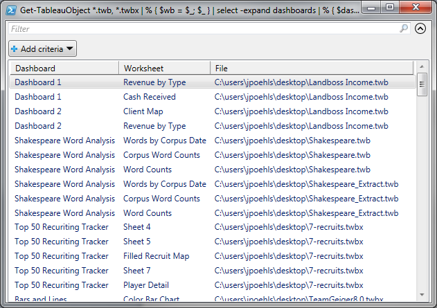

TableauKit: A PowerShell Module for Tableau
• http://joshua.poehls.me/2013/tableaukit-a-powershell-module-for-tableau/
If you’ve been following my Tableau via PowerShell series then you already know there are a lot of cool things you can do with Tableau workbooks using PowerShell. Up until now I’ve been sharing helper functions in a stand-alone fashion. No longer.
I’d like to introduce you to TableauKit. A pure, script-based PowerShell module for working with Tableau files.
Say what?
Today TableauKit is shipping with the following commands:
Get-TableauObject - Gets a summary object for a workbook. The summary contains things like the list of dashboards, worksheets, data sources, and parameters in the workbook. It also contains metadata like the version of Tableau that saved the workbook.
You can dig a bit deeper to find the parameter values and which worksheets are included on specific dashboards.
No XPath required!
- Get-TableauXml - Opens up a TWB or TWBX file and returns the workbook's raw XML. XPath Heaven.
- Export-Tableau - Lets you save changes you've made to the workbook's XML back into a new or existing TWB or TWBX file.
You’ll probably recognize Get-TableauXml and Export-Tableau from my previous posts about them. They are much better than when you last met them, though! Several bugs have been fixed and the names are shorter now.
Get-TableauObject is all new. Just because you can dig through the workbook with XPath doesn’t mean it’s fun. This command provides quick access to the most common parts of a workbook. Don’t worry, it also gives you the raw XML so you can go spelunking for the hard to find stuff!
No really, what can it do?
Find workbooks by worksheet name
Can’t remember which workbook contains that elusive “Top 10 Hot Dogs” worksheet?
Get-TableauObject *.twb, *.twbx |
where {
($_.Worksheets | select -Expand DisplayName) -contains "Top 10 Hot Dogs"
} |
select FileName
FileName -------- C:\users\jpoehls\desktop\result.twb C:\users\jpoehls\desktop\another-result.twbx
Analyze connection types
What types of connections do my workbooks use?
Get-TableauObject *.twb, *.twbx |
select -Expand DataSources |
group ConnectionType |
sort Count -Desc
Count Name
----- ----
26 excel
12 sqlserver
10 csv
4
3 dataengine
3 msaccess
2 bigquery
1 firebird
Find workbooks by connection type
Which workbooks use the Big Query connection?
Get-TableauObject *.twb, *.twbx |
where { ($_.DataSources | select -Expand ConnectionType) -eq "bigquery" } |
select FileName
FileName -------- C:\users\jpoehls\desktop\Shakespeare.twb C:\users\jpoehls\desktop\Shakespeare_Extract.twb
List all dashboard worksheets
Let’s get a list of all dashboards and their worksheets for all of our workbooks.
Oh, and we want that list presented in a GUI that we can use to further search and filter.
Get-TableauObject *.twb, *.twbx |
foreach { $workbook = $_; $_ } |
select -Expand Dashboards |
foreach { $dashboard = $_; $_ } |
select -Expand Worksheets |
select @{ Label="Dashboard"; Expression={$dashboard.DisplayName} },
@{ Label="Worksheet"; Expression={$_.DisplayName} },
@{ Label="File"; Expression={$workbook.FileName} } |
Out-GridView

Find worksheets with a specific column filter
Looking for all the workbooks and worksheets that have a filter on your “NextPaymentDate” column? Sure, we can do that.
This code is pretty ridiculous so I’m going to break it up with annotations to make it easier to grok.
This kind of query requires advanced knowledge of workbook internals and your mileage may vary if you run this against your own workbooks.
# Name of the data source.
$dataSource = "MonthlySummary (Landboss_com-Accounts)"
# Name of column that has a filter on it.
$column = "NextPaymentDate"
# Read all the workbooks.
Get-ChildItem *.twb , *.twbx |
# Save a reference to the file name.
foreach { $file = $_.FullName; $_ } |
Get-TableauXml |
# Find all worksheets with the data source we
# are looking for.
Select-Xml "/workbook/worksheets/worksheet/table/view/datasources/datasource" |
Select -Expand Node |
where {
$_.caption -eq $dataSource -or $_.name -eq $dataSource
} |
# Save a reference to the data source's actual name
# for later parts of the pipeline.
foreach { $dataSourceName = $_.name; $_ } |
# Find references to the column we are looking for.
# Note we're still inside the worksheet node.
Select-Xml "../../datasource-dependencies[@datasource='$dataSourceName']/column-instance[@column='[$column]']" |
Select -Expand Node |
# Save a reference to the column's actual name
# for the next part of the pipeline.
foreach { $filterColumnName = $_.name; $_ } |
# Find any filters on the worksheet that
# apply to the column we care about.
Select-Xml "../../filter[@column='[$dataSourceName].$filterColumnName']" |
select -Expand Node |
# Traverse back to the worksheet node.
Select-Xml "../../.." |
select -Expand Node |
# Build the final result display.
select @{ Label="Worksheet"; Expression={
if ($_.caption) { $_.caption }
else { $_.name }
}},
@{ Label="File"; Expression={$file} }
Worksheet File --------- ---- Avg Monthly Income C:\users\jpoehls\desktop\Landboss Income.twb Monthly Income by Account C:\users\jpoehls\desktop\Landboss Income.twb
You can do anything!
Hopefully this has given you a glimpse at the power of querying your workbooks en masse. The queries are pretty gnarly so I definitely recommend wrapping anything you’ll reuse into helper functions.
What are you waiting for? Go get it!
After you download it, check the README for detailed installation and usage instructions.
TableauKit is a product of InterWorks, a fantastic company that you really want to work for!
Roadmap
The future is wide open for this. What kind of functionality would you like to see added? Let me know in the comments!